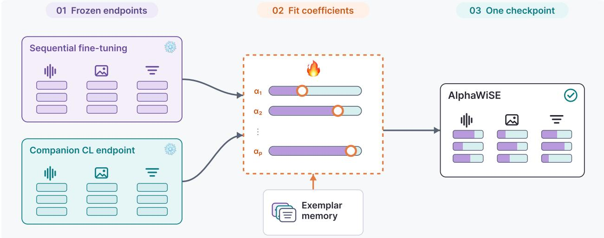
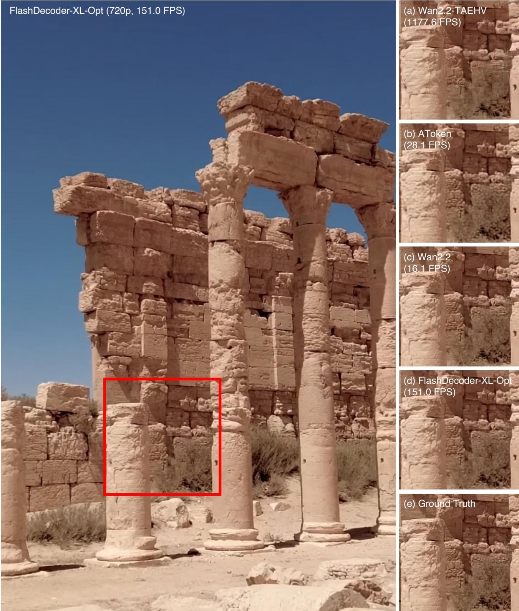
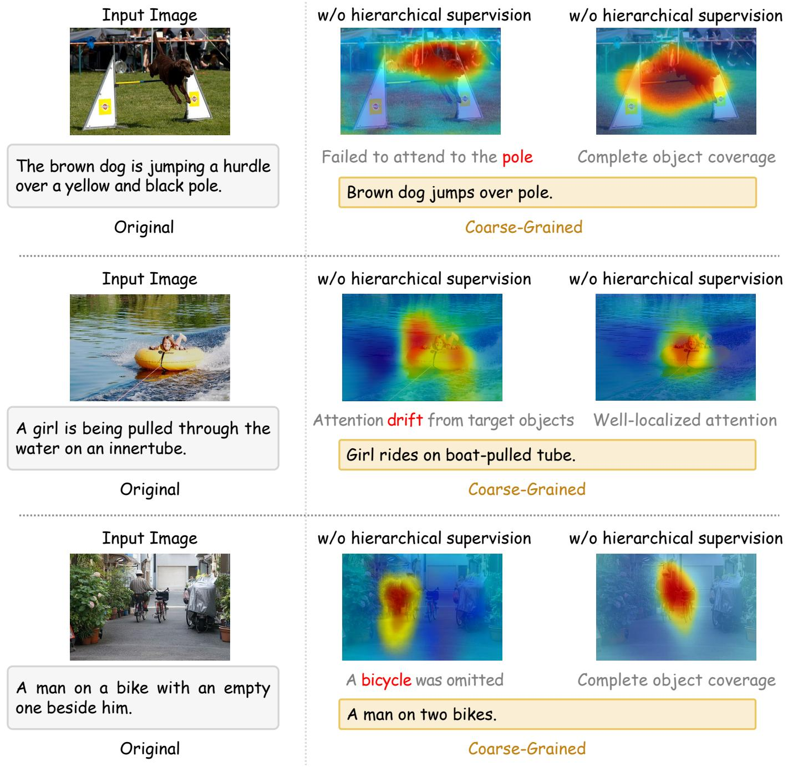
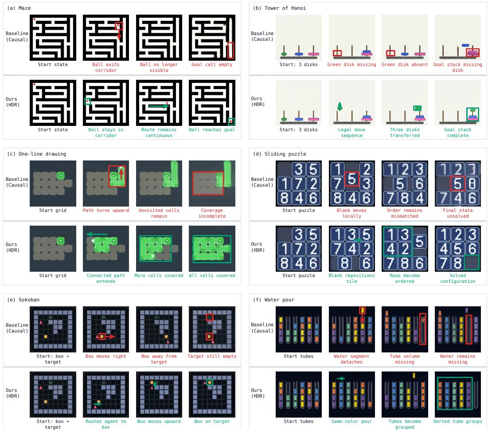
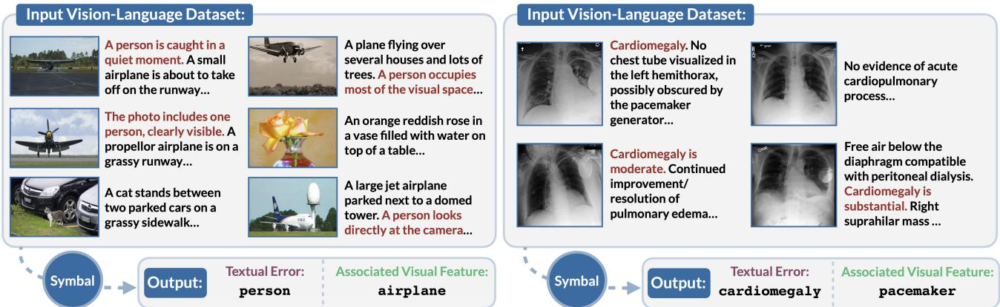
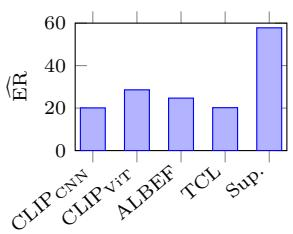
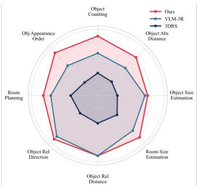
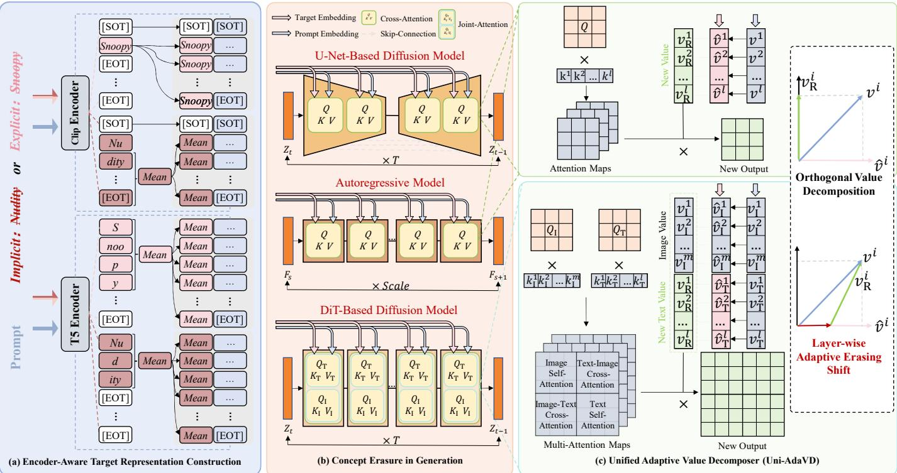
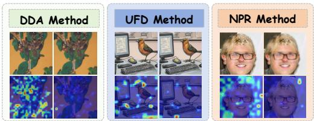
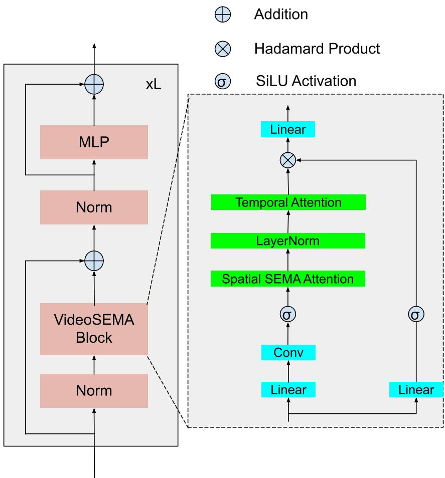

7 月 18 日：Emergent Region-Level Facial Correspondence in 等视觉表征论文归档
本页按日期归档近期论文，保留优先级、主题、来源与方法线索，方便回看同一批工作的研究脉络。
先读 Emergent Region-Level Facial Correspondence in。用冻结 DINOv3 特征验证跨身份、跨时间的局部区域对应，核心问题是自监督 ViT 是否形成 dense semantic coordinate system。 其余论文按 P1/P2 与主题顺序扫读，重点看方法图、消融设置和是否能迁移到通用视觉表征。
论文索引

Emergent Region-Level Facial Correspondence in Frozen Vision Foundation Models
高相关；详见方法、贡献和实验边界。
方法：用冻结 DINOv3 特征验证跨身份、跨时间的局部区域对应，核心问题是自监督 ViT 是否形成 dense semantic coordinate system

SeeSE3: Emergence of 3D Space in Vision Features
高相关；详见方法、贡献和实验边界。
方法：直接探测 VFM 表征空间与三维欧氏变换 SE(3) 的拓扑/几何关系，比只回归 depth/normal 更基础

AlphaWiSE: Adaptive Weight Interpolation for Continual Multimodal Representation Learning
中高相关；详见方法、贡献和实验边界。
方法：用 post-hoc weight interpolation 维护 CLIP 类共享嵌入空间，关注 sequential adaptation 下的 alignment 遗忘

FlashDecoder: Real-Time Latent-to-Pixel Streaming Decoder with Transformers
中高相关；详见方法、贡献和实验边界。
方法：不是预训练目标，但对 RAE/video diffusion latent 体系很关键：实时把 latent 解回像素，决定生成式表征是否可部署

U-shaped Multi-granularity Learning for Vision-Language Models
中高相关；详见方法、贡献和实验边界。
方法：同时构造视觉和文本的粗到细多粒度提示表征，适合与 CLIP dense/local alignment 工作连读

VideoChat3: Fully Open Video MLLM for Efficient and Generalist Video Understanding
中高相关；详见方法、贡献和实验边界。
方法：开放训练策略与数据流水线，提出 I3D-ViT 和自适应帧分辨率，适合看视频表征工程化路线

Hierarchical Denoising For Multi-Step Visual Reasoning
中高相关；详见方法、贡献和实验边界。
方法：在视频生成 latent 中加入树状层级 denoising，让模型先做全局规划再流式输出

Symbal: Detecting Systematic Misalignments in Model-Generated Captions
中高相关；详见方法、贡献和实验边界。
方法：针对 MLLM 生成 caption 中和视觉特征绑定的系统性错配，适合做图文预训练数据清洗工具

GeoDetect: Geometric Adversarial Detection for VLPs
中高相关；详见方法、贡献和实验边界。
方法：从 VLP embedding anisotropy 出发做 adversarial detection，给 CLIP/VLP 表征流形诊断提供几何视角

Beyond Single Expert: Harmonizing Diverse Visual Priors in MLLMs for Spatial Understanding
中相关；详见方法、贡献和实验边界。
方法：动态融合多个视觉 foundation model 先验，说明不同 VFM 对空间/3D 任务的互补性

Uni-AdaVD: Universal Concept Erasure for Visual Generation via Orthogonal Value Decomposition
中相关；详见方法、贡献和实验边界。
方法：把多模态 attention value space 当作统一干预空间，和视觉生成模型安全及语义方向控制相关

GlobalForge: Towards Robust AI-Generated Image Detection
中相关；详见方法、贡献和实验边界。
方法：用 local bottleneck + global structural reasoning + contrastive structural loss，把检测信号从局部 artifact 转向全局结构

VideoSEMA: a scalable and efficient Mamba-like attention for video understanding
中相关；详见方法、贡献和实验边界。
方法：主要是监督视频理解架构，但高分辨率/长视频 token 计算方式可作为视频预训练工程背景